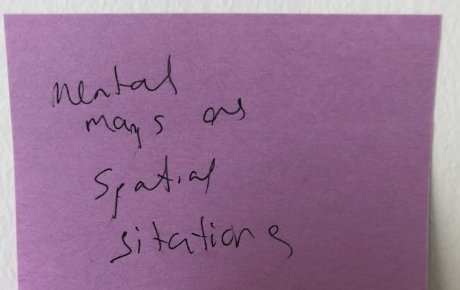

Deep mapping eludes operationalization in its interpretive capaciousness, though disorientation is an excellent state wherein to begin. Deep mapping resists preemptive definition for it is through the effects of practice that it becomes [differentially] articulated as an apparatus of investigation. My theory of deep mapping is therefore constituted through my practice of deep mapping. In this page, I trace my theorization of deep mapping by entering into dialogue with the physical and conceptual fields of my encounter. This conversation takes the form of a digital commonplace: embedded on the left are passages from the conceptual field; on the right, my interpretations of deep mapping based on encounters made navigating the physical field while holding these concepts in mind.
CITATION
Citation is a form of address, a formal acknowledgement of an other within the written conversation of an academic research text. Mott and Cockayne (2017) call for conscientious engagement in citation as a performative practice for resisting “hegemonies of knowledge production and authority” (959) within the neoliberal university that reify white, cisgendered, heteromasculinist narratives. Yet their audience is primarily other professors (citing narrowly, they write, does a disservice to “our students”). What does conscientious engagement mean for graduate students, especially master’s students like myself who are new to a discipline? When choosing what to read (this already presupposes a clear understanding of what a project is about), how does one account for time constraints, for expectations on bibliography length and breadth over depth? Conscientious engagement might also include mention of how one happened upon a text (was it required reading? a friend’s recommendation? serendipitous find?), whether it was read deeply or perfunctorily, and why its citation matters. Challenging content-oriented interdisciplinarity, Natalie Loveless (2019, chapter 3) suggests a polydisciplinamorous ethic that attends to how one relates to the various fields drawn upon and the ways in which one's research forms kinship ties. Conscientious engagement is not only about whom we cite but how. Forming (intellectual) kinship ties as a praxis of solidarity is addressed by Natalie Oswin (2020), who calls for a “turn toward and for each ‘other’” (14). Writes Oswin,
Geography as a field does not prioritize the material realities of differential embodiment. Epistemological pluralism too often amounts to epistemological unaccountability. ‘Others’ are set artificially apart, rendered isolated objects of study rather than knowledge co-producers, at best case material rather than scholarly interlocutors. (2020, 13)
I am reminded of a paper shared with me some time ago in which Therese Kenna states: “We have yet to effectively capture neurodiverse experiences of urban environments” (2022, 651). Kenna, a lecturer in urban geography, argues for the use of an intersectional analytic and geographical methods to understand “the social exclusion of those who are neurodiverse” (651) and advance a research agenda for urban planning and policy that accounts for and accommodates autistic persons. Since first reading this paper I have listened to Nick Walker’s Neuroqueer Heresies (2021), published a year before Kenna’s article Cities of Neurodiversity came out. Below, I cite (as Walker encourages) her definitions of some key terms invoked by Kenna to articulate how Kenna’s paper, rather than turning for and towards an ‘other,’ others those whom she claims to advocate for. I follow this conscientious engagement with my own experience of differential embodiment in the city and academy. I discuss the material realities of having a kinetic cognitive style (also known as ADHD) as a graduate student and some of the neuronormative expectations for engaging content, generating knowledge, and rendering research outputs. I call into question the rote citation of these norms, suggesting the form of in-text citation to be a site for subversion and creative destruction of “hegemonies of knowledge production and authority” (Mott and Cockayne 2017, 959).
Neurodiversity is the diversity of human minds, the infinite variation in neurocognitive functioning within our species… Neurodiversity is not a trait that any individual possesses or can possess. When an individual or group of individuals diverges from the dominant societal standards of “normal” neurocognitive functioning, they don’t “have neurodiversity,” they’re neurodivergent.
Neurodivergent, sometimes abbreviated as ND, means having a mind that functions in ways which diverge significantly from the dominant societal standards of “normal.” … Neurodivergent is quite a broad term. Neurodivergence (the state of being neurodivergent) can be largely or entirely genetic and innate, or it can be largely or entirely produced by brain-altering experience, or some combination of the two. Autism and dyslexia are examples of innate forms of neurodivergence, while alterations in brain functioning caused by such things as trauma, long-term meditation practice, or heavy usage of psychedelic drugs are examples of forms of neurodivergence produced through experience.
Neurotypical, often abbreviated as NT, means having a style of neurocognitive functioning that falls within the dominant societal standards of “normal.”
A group of people is neurodiverse if one or more members of the group differ substantially from other members, in terms of their neurocognitive functioning.
Walker, Nick. “Neurodiversity: Some Basic Terms & Definitions” In Neuroqueer Heresies. Autonomous Press, 2021.
----
…the dynamics of neuronormativity mirror and are entwined with the dynamics of heteronormativity. Like heteronormativity, neuronormativity is deeply ingrained in the prevailing culture and in all manner of social conventions, systems, and institutions. Like heteronormativity, neuronormativity is a pervasive social force, comprising a collection of innumerable culturally- constructed norms—norms related to nearly every aspect of embodiment, development, cognition, expression, communication, comportment, conduct, and interaction—which are socially modeled, inculcated, and enforced from birth onward in countless ways. And like heteronormativity, neuronormativity is to a large extent a matter of the ongoing habitual performance of internalized social norms.
Like heteronormative performance, neuronormative performance is a better fit for some folks than for others. At one end of the spectrum are those whose innate tendencies and inclinations are compatible enough with their local culture’s standards of neuronormative performance that they readily internalize those standards and come to experience their own socially instilled performance of neuronormativity as “natural.” This deep internalization and embodiment of the performance demands of neuronormativity, made possible when there is at least some basic degree of compatibility between those performance demands and the individual’s innate capacities, is what we’re really talking about when we refer to someone as neurotypical.
At the opposite end of the spectrum are those for whom the performance of neuronormativity is literally impossible—those who are absolutely unable to perform the actions necessary to maintain a neuronormative façade, and unable to suppress visibly non-neuronormative embodiments. In between the neurotypicals and those for whom neuronormative performance is an impossibility are those for whom neuronormativity is to some substantial degree incompatible with their natural tendencies and inclinations, such that neuronormative performance is a bad fit for them, is only partially possible and/or only sometimes possible for them, costs them significant effort, and is ultimately harmful for them to attempt to sustain.
Those who view neurodiversity through a neuroessentialist lens have an unfortunate tendency to compare and contrast neurotypicality with innate forms of neurodivergence like autism in a way that implicitly assumes autism and neurotypicality to be equally innate and equally intrinsic to a person’s being. In the less well-informed discourses on neurodiversity that unfold on social media, for instance, one too often sees people speaking of “the neurotypical brain,” as if neurotypicality were a biological destiny that unfolded inevitably from being born with a specific kind of brain.
On a strictly neurobiological level, there’s not actually such a thing as a “normal brain” or a “neurotypical brain,” any more than there’s such a thing as a “male brain,” a “heterosexual brain,” or an “American brain.” Neurotypical people aren’t people who all share one distinct type of human brain, they’re people whose compliance with prevailing cultural standards of neuronormative performance gains them the privileges that come with being considered “normal” within the dominant culture. Neurotypicality is more a social phenomenon than a biological one.
Walker, Nick. “A Horizon of Possibility: Some Notes on Neuroqueer Theory.” In Neuroqueer Heresies. Autonomous Press, 2021.
----
At the root of the pathology paradigm is the assumption that there is one “right” style of human neurocognitive functioning. Variations in neurocognitive functioning that diverge substantially from socially constructed standards of “normal”—including the variations that constitute autism—are framed within this paradigm as medical pathologies, as deficits, damage, or “disorders.”
Within the neurodiversity paradigm, neurodiversity is understood to be a form of human diversity that is subject to social dynamics—including the dynamics of oppression and systemic social power inequalities—similar to those dynamics that commonly occur around other forms of human diversity such as racial diversity or diversity of gender and sexual orientation.
The crux of the matter is that the neurodiversity paradigm is fundamentally in alignment with the social model of disability (disability understood as the result of failures of accommodation, societal attitudes, and systemic barriers, which conflict with the needs, traits, and abilities of specific groups and individuals); whereas the pathology paradigm is inextricably entwined with the medical model of disability (disability attributed exclusively to medicalized defects located within the disabled individual, with the implicit assumption that status quo societal norms are more or less “right” and “natural” and that having traits and needs that are incompatible with those norms constitutes a personal deficiency).
Walker, Nick. “Autism and the Pathology Paradigm.” In Neuroqueer Heresies. Autonomous Press, 2021
Kenna misuses the term ‘neurodiverse,’ repeatedly contrasting “individuals who are neurodiverse and neurotypical” (649). Individuals are not neurodiverse. Rather, individuals may identify as neurodivergent or neurotypical. [reiterate explanations of differentiation from the end of Neuroqueer Heresies here] A city is neurodiverse if it has an array of both neurodivergent and neurotypical identifying inhabitants. Neurodivergence is mentioned only three times throughout the entire paper, once in the introduction in reference to the “various neurodivergent conditions that also need research attention” (646) and twice more as “other neurodivergent conditions” (648, 649). By collapsing discussion of neurodivergence to autism while maintaining consideration of the “multiplicity of neurodiversity” (646), Kenna renders marginal the embodied experience of other forms of neurodivergence such as ADHD (Attention Deficit Hyperactivity Disorder, or as I prefer, Kinetic Cognitive Style), Sensory Processing Disorder (SPD), dyspraxia, dyslexia, dyscalculia, Borderline Personality Disorder (BPD), Bipolar Disorder, and Post Traumatic Stress Disorder (PTSD).
"Cities of neurodiversity" is grammatically incorrect. Neurodiversity refers to a diversity of neurocognitive styles, not “those who are neurologically different” (647). Different than what? All neurologies differ from one another. Assuming the pre-existence of a norm, Kenna remains unaccountable for her own role in the societal shaping of neurocognitive styles intelligible as ‘normal,’ and those differentially rendered as ‘other.’ Autism and other forms of neurodivergence are no more ‘conditions’ than is neurotypicality. There is no inherently normal neurocognition; to imply one such given marks neurodivergence as aberrant rather than part of the neurocognitive variation responsible for the neurodiversity of cities.
Kenna’s entire research agenda is structured around her citation of autistic persons’ “persistent deficits” in social communication/interaction and executive functioning (649). By proposing solutions to “defects located within the disabled individual” (Walker 2021), Kenna’s paper perpetuates what Walker calls the pathology paradigm. Kenna’s statement “We have yet to effectively capture neurodiverse experiences of urban environments” (2022, 651) draws an artificial separation between “we,” the researchers and supposed article audience, and neurodivergents, the objects of study. Are “we” presumed neurotypical? Who decides the metric of efficacy and means of “capture”? Putting aside the incorrect usage of ‘neurodiverse,’ would not a project aimed at investigating the neurodiversity of cities include research into neurotypical experiences of the urban environment as well? Neurotypical cognitive styles are not a monolith either. I would be interested in conducting a study of spatial awareness, mental maps, and ways of navigating the city across different neurocognitive styles. In this endeavor, I would foreground the practical knowledge of both neurodivergent and neurotypical people, asking them how (if at all) they believe their neurocognitive style impacts the ways in which they navigate and encounter the city, and how urban space could better accommodate their ways of being and operating in the world.
In 2023, Kenna published another article on “neurodiverse experiences of the city” (370), this time reporting on a survey she carried out in the fall of 2021 to neurodivergent inhabitants of Cork city, Ireland attending a local institution of higher education. Although Kenna continues to misuse the terms “neurodiverse” and “neurodiversity,” this paper cites significantly more forms of neurodivergence and attends thoughtfully to the relationality of disability. Disappointingly however, Kenna self-cites her previous paper (2022) not to hold herself accountable but to reify her previously written arguments. While both Kenna’s papers are speckled with citations, they are not a turn toward and for a neurocognitive ‘other.’ Instead, they relegate neurodivergent voices to case material––survey groups to be better accommodated rather than possible interlocutors or scholars themselves. I cite Kenna (2022, 2023) to model conscientious engagement that enacts an interference with an othering geography.
I return now to my own work as a neurodivergent geographer intent on feeling the city and assuming everyday encounters and navigation as sites and tactics of differential knowledge production. (When it’s all the field for deep mapping, everyday practices of living become fieldwork.) Much of my personal practice of urban deep mapping relies on walking and biking uneven terrain, modes of navigating the city that are not accessible to all inhabitants. Assuming the social model of disability, I am not disabled in my practical experience of urban space because all my access needs for navigating around the city as I please are met. [working out how to phrase all I want to say here]
However, as an ADHD graduate student in the academy, I am disabled. Institutionally established modes of knowledge production and form(at)s of rendering research privilege neurotypical cognitive styles, disabling ADHD graduate students like myself whose tactics and practices of investigation are often at odds with academic norms of legibility and intelligibility. Certain expectations govern progression through a graduate program: consistent cognitive capacity, swift processing and synthesis of new information, considerate executive function to initiate, respond, and follow-up with time-sensitive correspondence, social battery network with new people and maintain a growing number of relationships, tolerance of the status quo, etc., etc.. But progress is not always linear nor of consistent intensity or direction.
The city is hazy and so am I. I wake up late, spend till noon fighting the residual stupor of sleeping pills. Insomnia comes in waves; I pray it ebbs. I do five things at once without thinking: I wash the dishes while putting away glasses. I drop them all, I sweep them up and the faucet is still running. I try to eat. I choke. I'm unable to swallow like my body is rejecting input. I'm out of breath. My senses dulled. I'm lost in familiar places. I wander around listening to You want it darker on repeat. The mountains have disappeared and even downtown is fading away. I think I've opened myself so wide to feeling this city
that when it's hazy so am I.
Monday October 17th, 2022 467 days of being here
Cognitive capacity is not always a given, even on clear days. Sometimes the haze is inside my head. I negotiate myself into focus with stimulants. Adjusting to new medication takes time and compatibility is unpredictable.
[note here]
segway
The following is an excerpt written the introductory seminar all incoming geography graduates are required to take together. I wrote this in December of 2021, alternately sitting on the floor of my first room here surrounded by chaos or in the downtown Public Library looking miserably out from the window.
[room and library photos, formatted somehow like click through or side by side but small]
Back then I vehemently hated the rain. (I write these words a year and a half later, sitting cozily in my bed in my second room here with my window wide open, deeply appreciating the first rain in months.)
December 2021 //cw suicide
Early in the term Professor K made a joke in which she recalled a professor whose class was so hard, its difficulty was measured by the number of students who committed suicide. I was silent in the laughter that followed. Discussion resumed. I express now what I couldn’t find the words to say then: people die by suicide because they believe there is no possible way to go on. The hopelessness of students in the face of unrelenting academic pressure is not at all funny. Professor K’ humor revealed the prevalent conceptualization of “rigor” as difficulty to the point of impossibility.
This mentality was evident in 520. With proper scaffolding and tactical provision, the progress report could have been a productive learning experience. Instead, it was an impossible task with an immutable deadline. I began wondering not whether I was capable of graduate school, but whether I even wanted to pursue it. I saw no way to continue within a system that required me to treat my self as a commodity. Write the Great Lakes Feminist Geography Collective:
The business enterprise of academic life in the neoliberal university produces a work rhythm that is rushed, riddled with anxiety and pressure to be ever-present. Sometimes life gets in the way. Overwhelming pressures can lead to paralysis, and scholarship can come to a complete halt.” 1
Something had to shift and if it wasn’t the system (just yet) it would have to be my relation to it. What I learned from writing the progress report was this: taking care of my body-mind is more important than meeting a deadline because the body-mind will break down long before the system. Sometimes, denying extensions puts a student in the position of feeling like there is no possible path forward. Putting students in a position so antithetical to learning is poor teaching and far from a joke. I didn’t ask permission to submit this journal late because I already gave myself permission to prioritize my health and wellbeing. That such boundary-setting on my own part should feel so radical reveals just how normalized the expectation is that students treat their body-mind like a commodity.
[more about deadlines and neoliberal university - add if desired]
1. Mountz, Alison, Anne Bonds, Becky Mansfield, Jenna Loyd, Jennifer Hyndman, Margaret Walton-Roberts, Ranu Basu, et al. “For Slow Scholarship: A Feminist Politics of Resistance through Collective Action in the Neoliberal University.” ACME: An International Journal for Critical Geographies 14, no. 4 (2015): 1235–59.
Immutable deadlines can be disabling. Immutable deadlines do not necessarily produce rigorous scholarship. [ leading sentence] What if failing to comply after a best effort was made were not a personal failure but a systemic one. I am neurodivergent because I fail to conform to neuronormative performances of productivity and sociality, of making and doing, thinking and being. I can (a privilege) but as I grow older, masking is becoming increasingly uncomfortable and, to be stereotypically frank, unappealing.
Materials
After great ordeal and personal expense, I registered with my university’s Center for Accessibility. I was registered with the Center for Accessibility at my previous institution, and my accommodations of extra time on exams and as-needed deadline extensions was incredibly helpful. However, I don’t have exams as a graduate student. Accommodations for ADHD students typically cater to assignment oriented programs. There was little the Center could offer for a graduate student pursuing a long-term semi-structured research project. Indeed, the one and only accommodation I desperately needed––printed out hard-copies of course readings––was denied to me because it was not deemed an accessibility issue by the university. My department told me I could print at my own expense. I dislike reading digital books and papers as I struggle to retain content to my long-term memory without the text in-hand.
[more here]
Mott and Cockayne didn't mention ableism in academia
When neurotypical metrics of productivity determine what counts as valid and rigorous, process-oriented praxis-based research exceeds measure.
i will not - cripestemologies > WILLFULL REFUSAL -- risky speech.
Johnson, Merri Lisa, and Robert McRuer. “Cripistemologies: Introduction.” Journal of Literary & Cultural Disability Studies 8, no. 2 (2014): 127–47.
>Citational conventions are embedded in formal conventions that reproduce linear texts as legible research outputs.
>I consider what would turning towards differential embodiments as turn towards differential knowledges → modes of investigation and ways of rendering material outputs. As olsen says, the “turn toward and for each ‘other’... “It is about changing everything we do as scholars.” Conscientious engagement is praxis.
SITATION
I suggest form as a site for neuroqueering citation.
Sitation is neuroqueer citation.
Nick walker on neuroqueer:
Nick walker on neuroqueer:
1. Being both neurodivergent and queer, with some degree of conscious awareness and/or active exploration around how these two aspects of one’s being entwine and interact (or are, perhaps, mutually constitutive and inseparable).
2. Embodying and expressing one’s neurodivergence in ways that also queer one’s performance of gender, sexuality, ethnicity, and/or other aspects of one’s identity.
3. Engaging in practices intended to undo and subvert one’s own cultural conditioning and one’s ingrained habits of neuronormative and heteronormative performance, with the aim of reclaiming one’s capacity to give more full expression to one’s uniquely weird potentials and inclinations.
4. Engaging in the queering of one’s own neurocognitive processes (and one’s outward embodiment and expression of those processes) by intentionally altering them in ways that create significant and lasting increase in one’s divergence from prevailing cultural standards of neuronormativity and heteronormativity.
5. Approaching, embodying, and/or experiencing one’s neurodivergence as a form of queerness (e.g., in ways that are inspired by, or similar to, the ways in which queerness is understood and approached in Queer Theory, Gender Studies, and/or queer activism).
6. Producing literature, art, scholarship, and/or other cultural artifacts that foreground neuroqueer experiences, perspectives, and voices.
7. Producing critical responses to literature and/or other cultural artifacts, focusing on intentional or unintentional characterizations of neuroqueerness and how those characterizations illuminate and/or are illuminated by actual neuroqueer lives and experiences.
8. Working to transform social and cultural environments in order to create spaces and communities—and ultimately a society—in which engagement in any or all of the above practices is permitted, accepted, supported, and encouraged.
Bertilsdotter Rosqvist, Hanna, Monique Botha, Kristien Hens, Sarinah O’Donoghue, Amy Pearson, and Anna Stenning. “Cutting Our Own Keys: New Possibilities of Neurodivergent Storying in Research.” Autism 27, no. 5 (July 1, 2023): 1235–44.
Johnson, Merri Lisa, and Robert McRuer. “Cripistemologies: Introduction.” Journal of Literary & Cultural Disability Studies 8, no. 2 (2014): 127–47.
Kenna, Therese. “Cities of Neurodiversity: New Directions for an Urban Geography of Neurodiversity.” Area 54, no. 4 (2022): 646–54.
Kenna, Therese. “Neurodiversity in the City: Exploring the Complex Geographies of Belonging and Exclusion in Urban Space.” The Geographical Journal 189, no. 2 (2023): 370–82.
Loveless, Natalie. How to Make Art at the End of the World: A Manifesto for Research-Creation. Duke University Press, 2019.
Mott, Carrie, and Daniel Cockayne. “Citation Matters: Mobilizing the Politics of Citation toward a Practice of ‘Conscientious Engagement.’” Gender, Place & Culture 24, no. 7 (July 3, 2017): 954–73.
Oswin, Natalie. “An Other Geography.” Dialogues in Human Geography 10, no. 1 (March 1, 2020): 9–18.
Deep mapping is an ongoing and open-ended dialogue with the world
Haraway, Donna. “Situated Knowledges: The Science Question in Feminism and the Privilege of Partial Perspective.” Feminist Studies 14, no. 3 (1988): 575–99. https://doi.org/10.2307/3178066.
Deep mapping is situated, embodied inhabitation
Deep mapping is practical knowledge gleaned through everyday spatial navigations
Stewart, Kathleen. “Atmospheric Attunements.” Environment and Planning D: Society and Space 29, no. 3 (June 1, 2011): 445–53. https://doi.org/10.1068/d9109.
Deep mapping is attunement to affect
Deep mapping is a rhythmanalysis that precedes and exceeds measure
Deep mapping is iterative
Deep mapping is sitational

Deep mapping is immersive
Deep mapping is non-exhaustive
DEEP MAPPING IS INTERFERENCE WITH HEGEMONIC FORMS OF ENGAGING PLACE, PRODUCING GEOGRAPHIC KNOWLEDGE, AND RENDERING SPATIAL RESEARCH PUBLIC.
My theory of deep mapping is constituted through my practice of deep mapping.
That sentence took nine months of writing and re-writing. Indeed, I wrote that sentence while my theorization was still taking shape. What I'd finally found were words to state how my theory, the knowledge co-produced, the link between theory and practice and the what of my entire project - all emerge from my iteration through theory and practice. Situated. Embodied. With/In place.
LOVELESS 107, 70
Deep mapping is process oriented, slow scholarship as praxis.